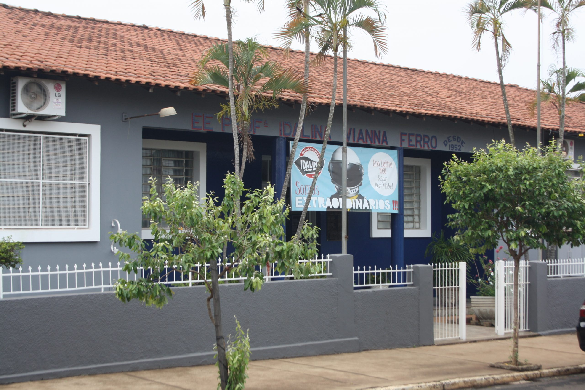
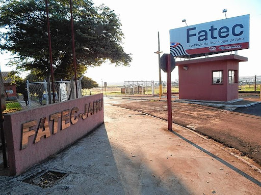
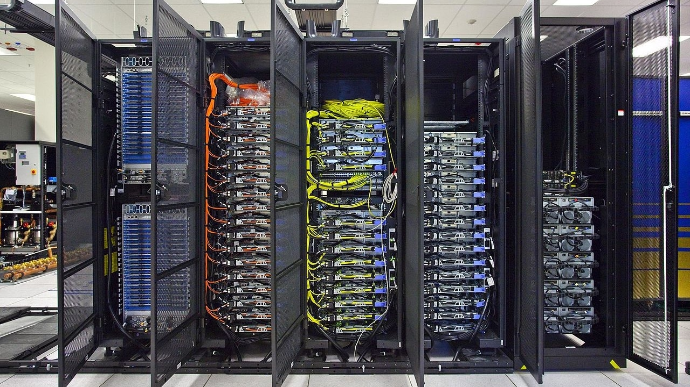

Iniciando em 2022, comecei o Ensino Médio na Escola Estadual Idalina Vianna Ferro Professora, onde me formei no final de 2024.
Foram três anos de novas amizades e realização de diversos trabalhos e projetos, como o Desenvolvimento de uma Revista Digital, onde pesquisamos detalhes sobre um tema livre que gostaríamos de retratar e produzimos uma revista digital com o auxílio de ferramentas de software para edição/manipulação de imagens. Após concluir a produção de cada página, vinculamos o projeto a um site chamado "Fliphtml", que transformou as imagens em uma revista digital interativa.

Iniciado em 2025, ainda estou cursando "Gestão da Tecnologia da Informação" na Faculdade de Tecnologia de Jahu.
No momento estou no segundo semestre do curso, com uma previsão para me formar em 2028. Ainda tenho muito conteúdo para conhecer, revisar e melhorar. Até o momento, essa formação vem me proporcionando boas experiências e oportunidades, como o curso introdutório relacionado à Cibersegurança e o Essenciais da T.i., estudado na matéria de Laboratório de Hardware, ministrado pelo professor Luis Paulo Afonso.
Atualmente tenho interesse em seguir na área de T.i. voltada para Desenvolvimento de Sistemas e Infraestrutura, além do estudo sobre Gestão de Sistemas Operacionais, matéria presente no segundo semestre do curso, atualmente ministrado pelo professor Anderson Ferreira Fernandes.
Acho interessante sobre como uma Infraestrutura tecnológica é montada a partir de determinada necessidade. Tenho interesse em explorar a área de Infraestrutura voltada para servidores, locais de trabalho, entre outros.

Imagem Ilustrativa - Originalmente publicada por "Desde Linux"